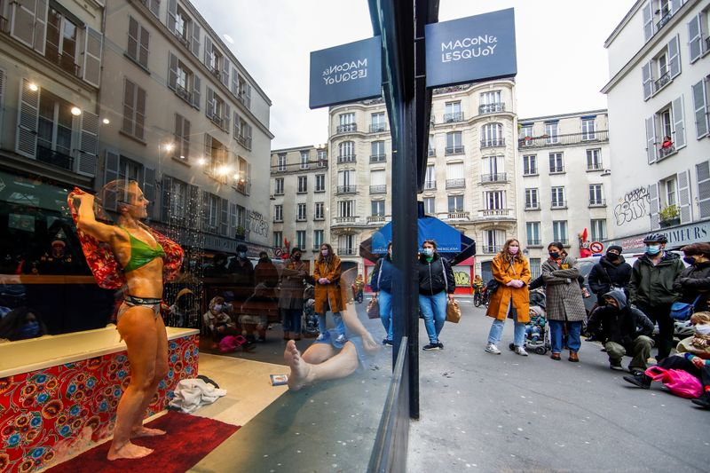

French audiences develop a taste for window theatre
(Makes clear in para 7 that Coquereau is male)
PARIS (Reuters) -French actress Isabelle Cagnat is pining to get back on stage once the pandemic is over, but on Sunday she had to be content with performing from behind the windows of a fashion boutique.
Outside the hip apparel store in central Paris, a small crowd of several dozen people gathered under a cold grey sky, some passers-by, others who had seen notices on social media.Organisers implored the audience to stand well apart to avoid trouble with police.
'It’s an act of defiance to say ‘we’re here, we’re ready to perform anywhere’,' Cagnat said after an hour-long performance of 'Amnesiacs Haven’t Experienced Anything Unforgettable' based on the book by French writer Herve Le Tellier.
'(It’s) to show that in life we need art, we need to think, to dream, to cry.You could see the audience was emotional.Everyone misses the theatre.'
Theatres, cinemas, art galleries and other cultural spaces have been shut since October and with France in a third nationwide lockdown as coronavirus infections sweep Europe, it is unclear when they will reopen.
In the street, the audience depended on a speaker to convey the lines of Cagnat and her co-performer Etienne Coquereau.
Inside the boutique, Coquereau said, any intimacy was reduced by the wall of glass that separated him from the audience, but there was still a connection.
'We had their expressions, their luminous faces, full of joy that you could see,' the 62-year-old said.
Coquereau said it was time the authorities allowed theatres to re-open with social distancing measures in place – a sentiment shared by some in their audience.
'This was a a magical moment, with everything going on,' said paramedic Jean-Michel Petit.
(Reporting by Michaela Cabrera and Clotaire Achi; Writing by Richard Lough; editing by Barbara Lewis, William Maclean)
Posted On: 2021-04-12T00:00:00

Content Date: 2021-04-12
Download Date: 2021-04-16
Document ID: L0C049SUC